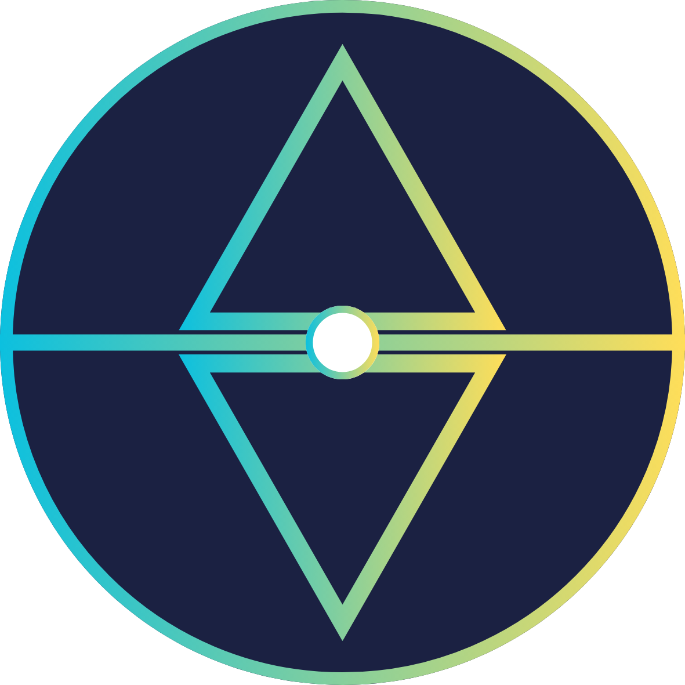

更多連結
歡迎透過以下官方渠道與跨語系社群平台，與我們的媒體合作矩陣取得聯繫
校園權益與行動倡議 (TW / EN)
青權陣線 YRF
與《北回歸線 TNM》合作之青年倡議團隊，專注於校園權益、學生自治與教育現場的深耕行動。
中立青年媒體 (TW / JP)

北回歸線 TNMNEWS
台灣青年主導的中立新聞媒體平台，聚焦學生權益、教育政策與社會公共議題之深度報導。
國際新聞傳播與解構 (EN / JP)
破局者 Paradox
與《北回歸線 TNM》合作之國際傳播單位。秉持事件解構、深度觀察、權力批判與工具理性，以英日雙語將台灣新聞推向國際。